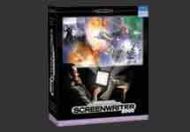
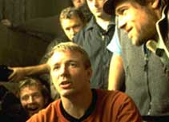

<html>
<head>
<title>Untitled Document</title>

<style type="text/css">
<!--
.qnav {  color: #FFFFFF; text-decoration: none}
.news {  text-decoration: none}
.halo {	border-bottom: black 1px solid; border-left: black 1px solid; border-right: black 1px solid; border-top: black 1px solid}
-->
</style>

<meta http-equiv="Content-Type" content="text/html; charset=iso-8859-1">
<SCRIPT LANGUAGE="JavaScript">
var content = new Array(


	'<table width="205" border="0" cellspacing="0" cellpadding="3" bgcolor="#333333"><tr valign="bottom"><td width="201" colspan="2" height="151"><u><div align="center"><a href="products/mmscreenwriter/quotes_index.html" target=_parent></a></u></td></tr><tr><td width="201" colspan="2" height="32"><div align="center"><u><a href="products/mmscreenwriter/quotes_index.html" target=_parent class="news"><font face="Arial, Helvetica, sans-serif" size="2"><font face="Arial, Helvetica, sans-serif" size="2" color="#FFFFFF"><b><font color="#FFFFCC"><i>Hunting for Good Software?</i></font></b></font></font></a></u></div></td></tr><tr valign="top"><td colspan="2" width="201" height="256"><div align="left"><p><u><a href="products/mmscreenwriter/quotes_index.html" target=_parent class="news"><font face="Arial, Helvetica, sans-serif" size="2"><font color="#FFFFFF"><font face="Arial, Helvetica, sans-serif" size="2">&quot;I just had the latest version of Screenwriter 2000 sent to me on the set of a film I&acute;m shooting in Paris. We recommend it to the Project Greenlight community because the best tools can only help a writer in his or her efforts to get an idea from the imagination to the big screen.&quot;</font></font></font><font face="Arial, Helvetica, sans-serif" size="2" color="#FFFFFF"><br></font></font></a></u></p><p align="right"><u><a href="products/mmscreenwriter/quotes_index.html" target=_parent class="news"><font face="Arial, Helvetica, sans-serif" size="2"><font face="Arial, Helvetica, sans-serif" size="2" color="#FFFFFF"><b>&#151;Matt Damon</b></font></font></a></u><p align="right"><u><a href="products/mmscreenwriter/quotes_index.html" target=_parent class="news"><font face="Arial, Helvetica, sans-serif" size="2"><font face="Arial, Helvetica, sans-serif" size="2" color="#FFFFFF"><b>Academy Award winning<br>Writer/ Actor<P><p align="right"><u><a href="products/mmscreenwriter/quotes_index.html" target=_parent class="news"><font face="Arial, Helvetica, sans-serif" size="2"><font face="Arial, Helvetica, sans-serif" size="2" color="#FFFFFF"><b><i>Good Will Hunting, The Talented Mr. Ripley, Rounders</i><br></b></font></font></a></u></p></div><p align="right"><font face="Arial, Helvetica, sans-serif" size="1" color="#FFFFFF"><a href="products/mmscreenwriter/quotes_index.html" target=_parent class="qnav"><b><u>Click here to read more reviews</u></b></a></font></p></td></tr></table>',


	'<table width="205" border="0" cellspacing="0" cellpadding="3" bgcolor="#333333"><tr valign="bottom"><td width="201" colspan="2" height="151"><u><div align="center"><a href="products/mmscreenwriter/quotes_index.html" target=_parent></a></u></td></tr><tr><td width="201" colspan="2" height="32"><div align="center"><u><a href="products/mmscreenwriter/quotes_index.html" target=_parent class="news"><font face="Arial, Helvetica, sans-serif" size="2"><font face="Arial, Helvetica, sans-serif" size="2" color="#FFFFFF"><b><font color="#FFFFCC"><i>Award-Winning Results!</i></font></b></font></font></a></u></div></td></tr><tr valign="top"><td colspan="2" width="201" height="256"><div align="left"><p><u><a href="products/mmscreenwriter/quotes_index.html" target=_parent class="news"><font face="Arial, Helvetica, sans-serif" size="2"><font color="#FFFFFF"><font face="Arial, Helvetica, sans-serif" size="2">&quot;Matt and I used the original version of Screenwriter 2000 when we wrote Good Will Hunting. It was and remains all you need to write a screenplay that looks professional, even if yours (like ours) took a few drafts before it read like one. I highly recommend this excellent piece of software.&quot;</font></font></font><font face="Arial, Helvetica, sans-serif" size="2" color="#FFFFFF"><br></font></font></a></u></p><p align="right"><u><a href="products/mmscreenwriter/quotes_index.html" target=_parent class="news"><font face="Arial, Helvetica, sans-serif" size="2"><font face="Arial, Helvetica, sans-serif" size="2" color="#FFFFFF"><b>&#151;Ben Affleck </b></font></font></a></u><p align="right"><u><a href="products/mmscreenwriter/quotes_index.html" target=_parent class="news"><font face="Arial, Helvetica, sans-serif" size="2"><font face="Arial, Helvetica, sans-serif" size="2" color="#FFFFFF"><b>Academy Award winning <br>Writer/ Actor <P><p align="right"><u><a href="products/mmscreenwriter/quotes_index.html" target=_parent class="news"><font face="Arial, Helvetica, sans-serif" size="2"><font face="Arial, Helvetica, sans-serif" size="2" color="#FFFFFF"><b><i>Good Will Hunting, Armageddon, Pearl Harbor</i><br></b></font></font></a></u></p></div><p align="right"><font face="Arial, Helvetica, sans-serif" size="1" color="#FFFFFF"><a href="products/mmscreenwriter/quotes_index.html" target=_parent class="qnav"><b><u>Click here to read more reviews</u></b></a></font></p></td></tr></table>',


	'<table width="205" border="0" cellspacing="0" cellpadding="3" bgcolor="#333333"><tr valign="bottom"><td width="201" colspan="2" height="151"><u><div align="left"><a href="products/mmscreenwriter/quotes_index.html" target=_parent></a></u></td></tr><tr><td width="201" colspan="2" height="32"><div align="center"><u><a href="products/mmscreenwriter/quotes_index.html" target=_parent class="news"><font face="Arial, Helvetica, sans-serif" size="2"><font face="Arial, Helvetica, sans-serif" size="2" color="#FFFFFF"><b><font color="#FFFFCC"><i>A Movie Legend Speaks:</i></font></b></font></font></a></u></div></td></tr><tr valign="top"><td colspan="2" width="201" height="256"><div align="left"><p><u><a href="products/mmscreenwriter/quotes_index.html" target=_parent class="news"><font face="Arial, Helvetica, sans-serif" size="2"><font color="#FFFFFF"><font face="Arial, Helvetica, sans-serif" size="2">&quot;The software has made a tremendous difference for me, handling the constant revisions I love to do with tremendous efficiency.<br><br>I highly recommend Movie Magic Screenwriter to others who love writing screenplays.&quot;</font></font></font><font face="Arial, Helvetica, sans-serif" size="2" color="#FFFFFF"><br></font></font></a></u></p><p align="right"><u><a href="products/mmscreenwriter/quotes_index.html" target=_parent class="news"><font face="Arial, Helvetica, sans-serif" size="2"><font face="Arial, Helvetica, sans-serif" size="2" color="#FFFFFF"><b>&#151;Francis Coppola</b></font></font></a></u></p><p align="right"><u><a href="products/mmscreenwriter/quotes_index.html" target=_parent class="news"><font face="Arial, Helvetica, sans-serif" size="2"><font face="Arial, Helvetica, sans-serif" size="2" color="#FFFFFF"><b><i>Academy Award winning<br>Director/ Writer/ Producer</i><br></b></font></font></a></u></p></div><p align="right"><font face="Arial, Helvetica, sans-serif" size="1" color="#FFFFFF"><a href="products/mmscreenwriter/quotes_index.html" target=_parent class="qnav"><b><u>Click here to read more reviews</u></b></a></font></p></td></tr></table>',


	'<table width="205" border="0" cellspacing="0" cellpadding="3" bgcolor="#333333"><tr valign="bottom"><td width="201" colspan="2" height="151"><u><div align="left"><a href="products/mmscreenwriter/quotes_index.html" target=_parent></a></u></td></tr><tr><td width="201" colspan="2" height="32"><div align="center"><u><a href="products/mmscreenwriter/quotes_index.html" target=_parent class="news"><font face="Arial, Helvetica, sans-serif" size="2"><font face="Arial, Helvetica, sans-serif" size="2" color="#FFFFFF"><b><font color="#FFFFCC"><i>"CROUCHING" WRITER:</i></font></b></font></font></a></u></div></td></tr><tr valign="top"><td colspan="2" width="201" height="256"><div align="left"><p><u><a href="products/mmscreenwriter/quotes_index.html" target=_parent class="news"><font face="Arial, Helvetica, sans-serif" size="2"><font color="#FFFFFF"><font face="Arial, Helvetica, sans-serif" size="2">&quot;I use Movie Magic for every film, every time!&quot;</font></font></font><font face="Arial, Helvetica, sans-serif" size="2" color="#FFFFFF"><br></font></font></a></u></p><p align="right"><u><a href="products/mmscreenwriter/quotes_index.html" target=_parent class="news"><font face="Arial, Helvetica, sans-serif" size="2"><font face="Arial, Helvetica, sans-serif" size="2" color="#FFFFFF"><b>&#151;James Schamus<br><i>Writer/Producer</b></font></font></a></u></p><p align="right"><u><a href="products/mmscreenwriter/quotes_index.html" target=_parent class="news"><font face="Arial, Helvetica, sans-serif" size="2"><font face="Arial, Helvetica, sans-serif" size="2" color="#FFFFFF"><b>Crouching Tiger, Hidden Dragon <br>Sense & Sensibility</b></font></font></a></u></p><p align="right"><u><a href="products/mmscreenwriter/quotes_index.html" target=_parent class="news"><font face="Arial, Helvetica, sans-serif" size="2"><font face="Arial, Helvetica, sans-serif" size="2" color="#FFFFFF"><b><i></i><br></b></font></font></a></u></p></div><p align="right"><font face="Arial, Helvetica, sans-serif" size="1" color="#FFFFFF"><a href="products/mmscreenwriter/quotes_index.html" target=_parent class="qnav"><b><u>Click here to read more reviews</u></b></a></font></p></td></tr></table>',


	'<table width="205" border="0" cellspacing="0" cellpadding="3" bgcolor="#333333"><tr valign="bottom"><td width="201" colspan="2" height="151"><u><div align="left"><a href="products/mmscreenwriter/quotes_index.html" target=_parent></a></u></td></tr><tr><td width="201" colspan="2" height="32"><div align="center"><u><a href="products/mmscreenwriter/quotes_index.html" target=_parent class="news"><font face="Arial, Helvetica, sans-serif" size="2"><font face="Arial, Helvetica, sans-serif" size="2" color="#FFFFFF"><b><font color="#FFFFCC"><i>TV Funny Man:</i></font></b></font></font></a></u></div></td></tr><tr valign="top"><td colspan="2" width="201" height="256"><div align="left"><p><u><a href="products/mmscreenwriter/quotes_index.html" target=_parent class="news"><font face="Arial, Helvetica, sans-serif" size="2"><font color="#FFFFFF"><font face="Arial, Helvetica, sans-serif" size="2">&quot;I&acute;m writing to tell you how pleased I am with your Screenwriter 2000 software.<br><br>The most amazing part to me was the ability to work with a partner over a modem.  It was so easy we couldn&acute;t believe it.  And in real time!<br><br>In fact, I liked it so much, I intend to have The Drew Carey Show switch over to your product next season to replace the program we&acute;re using now.&quot;</font></font></font><font face="Arial, Helvetica, sans-serif" size="2" color="#FFFFFF"><br></font></font></a></u></p><p align="right"><u><a href="products/mmscreenwriter/quotes_index.html" target=_parent class="news"><font face="Arial, Helvetica, sans-serif" size="2"><font face="Arial, Helvetica, sans-serif" size="2" color="#FFFFFF"><b>&#151;Drew Carey<br><i>Actor/Writer/Producer</b></font></font></a></u></p><p align="right"><u><a href="products/mmscreenwriter/quotes_index.html" target=_parent class="news"><font face="Arial, Helvetica, sans-serif" size="2"><font face="Arial, Helvetica, sans-serif" size="2" color="#FFFFFF"><b>The Drew Carey Show</b></font></font></a></u></p><p align="right"><u><a href="products/mmscreenwriter/quotes_index.html" target=_parent class="news"><font face="Arial, Helvetica, sans-serif" size="2"><font face="Arial, Helvetica, sans-serif" size="2" color="#FFFFFF"><b><i></i><br></b></font></font></a></u></p></div><p align="right"><font face="Arial, Helvetica, sans-serif" size="1" color="#FFFFFF"><a href="products/mmscreenwriter/quotes_index.html" target=_parent class="qnav"><b><u>Click here to read more reviews</u></b></a></font></p></td></tr></table>',


	'<table width="205" border="0" cellspacing="0" cellpadding="3" bgcolor="#333333"><tr valign="bottom"><td width="201" colspan="2" height="151"><u><div align="center"><a href="products/mmscreenwriter/quotes_index.html" target=_parent></a></u></td></tr><tr><td width="201" colspan="2" height="32"><div align="center"><u><a href="products/mmscreenwriter/quotes_index.html" target=_parent class="news"><font face="Arial, Helvetica, sans-serif" size="2"><font face="Arial, Helvetica, sans-serif" size="2" color="#FFFFFF"><b><font color="#FFFFCC"><i>SNATCH THIS SOFTWARE!</i></font></b></font></font></a></u></div></td></tr><tr valign="top"><td colspan="2" width="201" height="256"><div align="left"><p><u><a href="products/mmscreenwriter/quotes_index.html" target=_parent class="news"><font face="Arial, Helvetica, sans-serif" size="2"><font color="#FFFFFF"><font face="Arial, Helvetica, sans-serif" size="2">&quot;Movie Magic Screenwriter is marvelous! We use it on every script that comes in, and what&acute;s even more fantastic is we&acute;re able to email scripts out conveniently.&quot;<P><B>&quot;We use Screenwriter faithfully- it is a key to our success!</B>&quot;</font></font></font><font face="Arial, Helvetica, sans-serif" size="2" color="#FFFFFF"><br></font></font></a></u></p><p align="right"><u><a href="products/mmscreenwriter/quotes_index.html" target=_parent class="news"><font face="Arial, Helvetica, sans-serif" size="2"><font face="Arial, Helvetica, sans-serif" size="2" color="#FFFFFF"><b>&#151;Guy Ritchie</b></font></font></a></u></p><p align="right"><u><a href="products/mmscreenwriter/quotes_index.html" target=_parent class="news"><font face="Arial, Helvetica, sans-serif" size="2"><font face="Arial, Helvetica, sans-serif" size="2" color="#FFFFFF"><b><i>Writer/ Director<BR>Snatch<BR>Lock, Stock, and Two Smoking Barrels</i><br></b></font></font></a></u></p></div><p align="right"><font face="Arial, Helvetica, sans-serif" size="1" color="#FFFFFF"><a href="products/mmscreenwriter/quotes_index.html" target=_parent class="qnav"><b><u>Click here to read more reviews</u></b></a></font></p></td></tr></table>',


	'<table width="205" border="0" cellspacing="0" cellpadding="3" bgcolor="#333333"><tr valign="bottom"><td width="201" colspan="2" height="151"><u><div align="left"><a href="products/mmscreenwriter/quotes_index.html" target=_parent></a></u></td></tr><tr><td width="201" colspan="2" height="32"><div align="center"><u><a href="products/mmscreenwriter/quotes_index.html" target=_parent class="news"><font face="Arial, Helvetica, sans-serif" size="2"><font face="Arial, Helvetica, sans-serif" size="2" color="#FFFFFF"><b><font color="#FFFFCC"><i>A Movie Legend Speaks:</i></font></b></font></font></a></u></div></td></tr><tr valign="top"><td colspan="2" width="201" height="256"><div align="left"><p><u><a href="products/mmscreenwriter/quotes_index.html" target=_parent class="news"><font face="Arial, Helvetica, sans-serif" size="2"><font color="#FFFFFF"><font face="Arial, Helvetica, sans-serif" size="2">&quot;The software has made a tremendous difference for me, handling the constant revisions I love to do with tremendous efficiency.<br><br>I highly recommend Movie Magic Screenwriter to others who love writing screenplays.&quot;</font></font></font><font face="Arial, Helvetica, sans-serif" size="2" color="#FFFFFF"><br></font></font></a></u></p><p align="right"><u><a href="products/mmscreenwriter/quotes_index.html" target=_parent class="news"><font face="Arial, Helvetica, sans-serif" size="2"><font face="Arial, Helvetica, sans-serif" size="2" color="#FFFFFF"><b>&#151;Francis Coppola</b></font></font></a></u></p><p align="right"><u><a href="products/mmscreenwriter/quotes_index.html" target=_parent class="news"><font face="Arial, Helvetica, sans-serif" size="2"><font face="Arial, Helvetica, sans-serif" size="2" color="#FFFFFF"><b><i>Academy Award winning<br>Director/ Writer/ Producer</i><br></b></font></font></a></u></p></div><p align="right"><font face="Arial, Helvetica, sans-serif" size="1" color="#FFFFFF"><a href="products/mmscreenwriter/quotes_index.html" target=_parent class="qnav"><b><u>Click here to read more reviews</u></b></a></font></p></td></tr></table>',


	'<table width="205" border="0" cellspacing="0" cellpadding="3" bgcolor="#333333"><tr valign="bottom"><td width="201" colspan="2" height="151"><u><div align="center"><a href="products/mmscreenwriter/quotes_index.html" target=_parent></a></u></td></tr><tr><td width="201" colspan="2" height="32"><div align="center"><u><a href="products/mmscreenwriter/quotes_index.html" target=_parent class="news"><font face="Arial, Helvetica, sans-serif" size="2"><font face="Arial, Helvetica, sans-serif" size="2" color="#FFFFFF"><b><font color="#FFFFCC"><i>SNATCH THIS SOFTWARE!</i></font></b></font></font></a></u></div></td></tr><tr valign="top"><td colspan="2" width="201" height="256"><div align="left"><p><u><a href="products/mmscreenwriter/quotes_index.html" target=_parent class="news"><font face="Arial, Helvetica, sans-serif" size="2"><font color="#FFFFFF"><font face="Arial, Helvetica, sans-serif" size="2">&quot;Movie Magic Screenwriter is marvelous! We use it on every script that comes in, and what&acute;s even more fantastic is we&acute;re able to email scripts out conveniently.&quot;<P><B>&quot;We use Screenwriter faithfully- it is a key to our success!</B>&quot;</font></font></font><font face="Arial, Helvetica, sans-serif" size="2" color="#FFFFFF"><br></font></font></a></u></p><p align="right"><u><a href="products/mmscreenwriter/quotes_index.html" target=_parent class="news"><font face="Arial, Helvetica, sans-serif" size="2"><font face="Arial, Helvetica, sans-serif" size="2" color="#FFFFFF"><b>&#151;Guy Ritchie</b></font></font></a></u></p><p align="right"><u><a href="products/mmscreenwriter/quotes_index.html" target=_parent class="news"><font face="Arial, Helvetica, sans-serif" size="2"><font face="Arial, Helvetica, sans-serif" size="2" color="#FFFFFF"><b><i>Writer/ Director<BR>Snatch<BR>Lock, Stock, and Two Smoking Barrels</i><br></b></font></font></a></u></p></div><p align="right"><font face="Arial, Helvetica, sans-serif" size="1" color="#FFFFFF"><a href="products/mmscreenwriter/quotes_index.html" target=_parent class="qnav"><b><u>Click here to read more reviews</u></b></a></font></p></td></tr></table>',


	'<table width="205" border="0" cellspacing="0" cellpadding="3" bgcolor="#333333"><tr valign="bottom"><td width="201" colspan="2" height="151"><u><div align="left"><a href="products/mmscreenwriter/quotes_index.html" target=_parent></a></u></td></tr><tr><td width="201" colspan="2" height="32"><div align="center"><u><a href="products/mmscreenwriter/quotes_index.html" target=_parent class="news"><font face="Arial, Helvetica, sans-serif" size="2"><font face="Arial, Helvetica, sans-serif" size="2" color="#FFFFFF"><b><font color="#FFFFCC"><i>The Preferred Choice of the Feature Department of DreamWorks SKG</i></font></b></font></font></a></u></div></td></tr><tr valign="top"><td colspan="2" width="201" height="256"><div align="left"><p><u><a href="products/mmscreenwriter/quotes_index.html" target=_parent class="news"><font face="Arial, Helvetica, sans-serif" size="2"><font color="#FFFFFF"><font face="Arial, Helvetica, sans-serif" size="2">&quot;Every feature script at DreamWorks goes through my hands, and every one goes through your program [Movie Magic Screenwriter 2000]. I cannot recommend it highly enough.&quot;</font></font></font><font face="Arial, Helvetica, sans-serif" size="2" color="#FFFFFF"><br></font></font></a></u></p><p align="right"><u><a href="products/mmscreenwriter/quotes_index.html" target=_parent class="news"><font face="Arial, Helvetica, sans-serif" size="2"><font face="Arial, Helvetica, sans-serif" size="2" color="#FFFFFF"><b>&#151;Christopher Gauntt</b></font></font></a></u></p><p align="right"><u><a href="products/mmscreenwriter/quotes_index.html" target=_parent class="news"><font face="Arial, Helvetica, sans-serif" size="2"><font face="Arial, Helvetica, sans-serif" size="2" color="#FFFFFF"><b><i>Project Coordinator<br>Feature Story Dept.<br>DreamWorks SKG</i><br></b></font></font></a></u></p></div><p align="right"><font face="Arial, Helvetica, sans-serif" size="1" color="#FFFFFF"><a href="products/mmscreenwriter/quotes_index.html" target=_parent class="qnav"><b><u>Click here to read more reviews</u></b></a></font></p></td></tr></table>',


	'<table width="205" border="0" cellspacing="0" cellpadding="3" bgcolor="#333333"><tr valign="bottom"><td width="201" colspan="2" height="151"><u><div align="left"><a href="products/mmscreenwriter/quotes_index.html" target=_parent></a></u></td></tr><tr><td width="201" colspan="2" height="32"><div align="center"><u><a href="products/mmscreenwriter/quotes_index.html" target=_parent class="news"><font face="Arial, Helvetica, sans-serif" size="2"><font face="Arial, Helvetica, sans-serif" size="2" color="#FFFFFF"><b><font color="#FFFFCC"><i>A DYNAMIC DUO!</i></font></b></font></font></a></u></div></td></tr><tr valign="top"><td colspan="2" width="201" height="256"><div align="left"><p><u><a href="products/mmscreenwriter/quotes_index.html" target=_parent class="news"><font face="Arial, Helvetica, sans-serif" size="2"><font color="#FFFFFF"><font face="Arial, Helvetica, sans-serif" size="2"><B>&quot;The best stand alone screenwriting software we&acute;ve ever used.&quot;</B><br><br>&quot;We especially love the function that allows the computer to read your script back to you. With its ability to attach different voices to different characters, Movie Magic gives you a unique way of hearing your own script. We think it&acute;s fantastic.&quot;</font></font></font><font face="Arial, Helvetica, sans-serif" size="2" color="#FFFFFF"><br></font></font></a></u></p><p align="right"><u><a href="products/mmscreenwriter/quotes_index.html" target=_parent class="news"><font face="Arial, Helvetica, sans-serif" size="2"><font face="Arial, Helvetica, sans-serif" size="2" color="#FFFFFF"><b>&#151;Roland Emmerich and<br>Dean Devlin<br>Writers/Directors/Producers</b></font></font></a></u></p><p align="right"><u><a href="products/mmscreenwriter/quotes_index.html" target=_parent class="news"><font face="Arial, Helvetica, sans-serif" size="2"><font face="Arial, Helvetica, sans-serif" size="2" color="#FFFFFF"><b><i>The Patriot, Godzilla, Independence Day, Stargate</i><br></b></font></font></a></u></p></div><p align="right"><font face="Arial, Helvetica, sans-serif" size="1" color="#FFFFFF"><a href="products/mmscreenwriter/quotes_index.html" target=_parent class="qnav"><b><u>Click here to read more reviews</u></b></a></font></p></td></tr></table>'


)
</SCRIPT>
<SCRIPT LANGUAGE="JavaScript" SRC="rotate.js">
</SCRIPT>
<meta http-equiv="refresh" content="15">
</head>

<body link="#FFFFFF" vlink="#FFFFFF" alink="#FFFFFF" bgcolor="#333333">
<SCRIPT LANGUAGE="JavaScript">
displayRotatedContent("request")
</SCRIPT>
</body>
</html>
